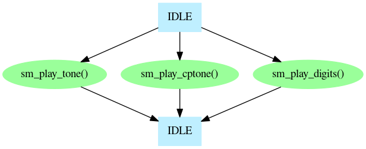
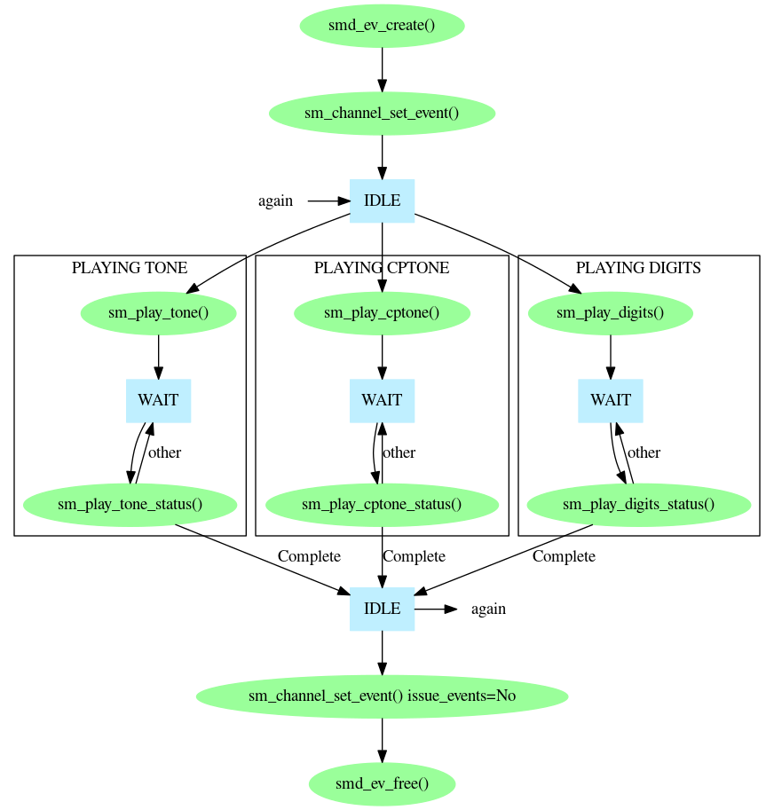

There are three kinds of signal that Prosody can generate for you:
A simple tone is a continuous sound consisting of one or two frequencies. When you play a simple tone you tell Prosody how long to play it and what frequencies to use. This type of tone is played by sm_play_tone(). A call progress tone is a sequence of simple tones which go on and off in a particular pattern. To play one of these you tell Prosody what pattern to use and for how long it should repeat. This is done with sm_play_cptone(). Finally, DTMF digits use standardised tones, so when you want to play these you simply tell Prosody which digits to send and it automatically selects the correct tones to use. This uses sm_play_digits().
These three kinds of tone generation have a lot in common, so they will be described together and will all be described by the general term "playing tones".
To play tones you need a Prosody channel which can perform output. This means one of the following:
The output from the channel must also have been connected appropriately. See Prosody Guide - how to use datafeeds for how to do this.
The simplest way to play a tone is to invoke the start function
specifying a non-zero (i.e. true) value for the
wait_for_completion parameter field.

While this has the advantage of being extremely simple, in many applications it is unsuitable for two reasons: the generation of tones cannot be aborted, and the thread which generates the tone is blocked for the full duration of tone generation.
If you want to be able to abort the tone being played, or you want a single thread to be able to generate a tone while doing other work, operate the tone generation like this:
wait_for_completion parameter field.
...Complete
then the replay has finished.

When using this method of playing tones, it is possible to abort the generation of the tone before it has finished (except for playing digits, but they're quite short anyway). This is done by calling sm_play_tone_abort() or sm_play_cptone_abort(), depending on which type of tone is being generated. Note that you still need to continue checking the status until completion is reported.